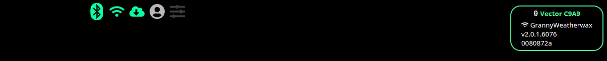

Troubleshooting
Information on this page applies to the experience of setting Vector up with wire-pod on Windows.
The Vector setup experience should not differ between Windows 10 or 11
Google Chrome or Microsoft Edge can be used to setup Vector. The author of this site used both browsers setting up two Vectors with wire-pod
Reminder that all of the Vector setup takes place in a web browser, not the DDL Vector app
It's not you, it's bluetooth
Bluetooth has always been a frustrating part of the Vector setup process. It is not unusual for multiple tries before Vector connects via bluetooth
Problems encountered while trying to pair Vector to bluetooth
Vector reboots during the pairing process
The Vector that did this is an original Anki Vector purchased after Anki went under, but before DDL purchased Anki's assets
It was a used Vector and since purchase goes through periods of random reboots. I assumme that the random reboots are due to the wear and tear of falling off of objects or how the Anki Vector's were designed
Once Vector finished rebooting, the pairing process was tried again and this time Vector did not reboot and successfully paired
Vector doesn't pair at the first attempt
Things to try if pairing continues to fail:
- Refresh the web page
- Press Ctrl and F5 at the same time to clear browser cache
- Use a different web browser
Sometimes, Vector will leave pairing mode during the process. This is not abnormal and Vector can be put back into pairing mode
- When trying to pair, the browser message says Vector is already paired but isn't paired
This was experienced multiple times. The "solution" was to keep trying to pair
Exploring the top menu
As you go through the setup process, the browser page display information that can be helpful when troubleshooting

The bluetooth and wifi indicators in the screen capture above are both green. This indicates that Vector is connected successfully using bluetooth and your 2.4 GHz wireless network
In the right corner, four pieces of information are displayed
- Vector's 4 digit ID
- The name of your wifi network is connected to
- Vector's software version
- A secondary ID for Vector
Activation fails
Warning
The section below is not completed. Screenshots and additional information still need to be added.
If you have trouble with the activate step, you're not alone. I failed activation multiple times with the following issues:
- My PC was not on the 2.4 GHz wireless network
- Completely missed the step that updates Vector's software
- Port forwarding in Windows was something I've never done before
Wrong wifi network
Your Windows computer needs to be on your 2.4 GHz wifi network
If you've successfully paired Vector using bluetooth, your web browser will display usefu
- Vector's firmware wasn't updated to wire-pod
To communicate with wire-pod, Vector needs to be updated
Tip
Updating Vector's firmware does NOT delete user data. Your Vector will continue to recognize you after the bot is set up with wire-pod
......
- Port forwarding
This is the first and only time I've had to setup port forwarding myself. It's possible I don't have the terminology correct. Also, this is not router port forwarding. This is done in Windows
Inbound and outbound ports need to be setup for Windows to allow communication to wire-pod.
Wire-pod needs.the below ports open
443, 8080, 80, 8084
This can be done via commands or manual setup in the firewall software